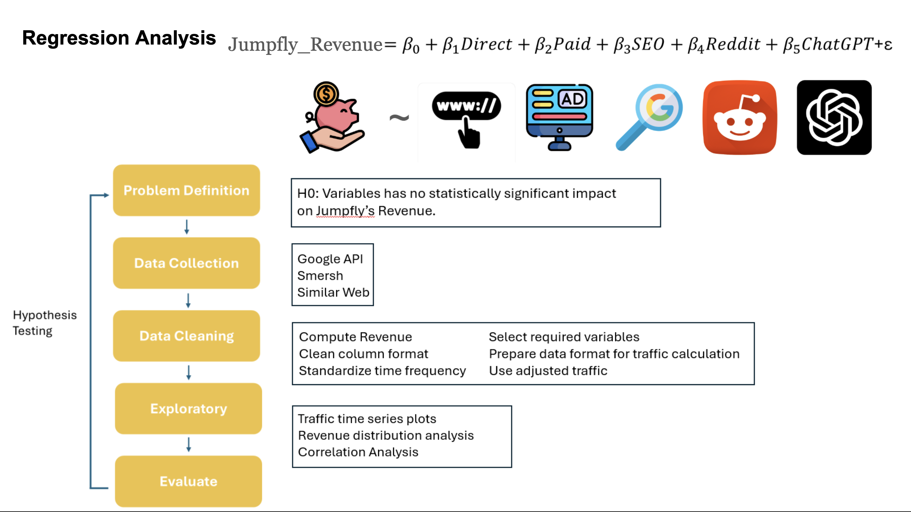
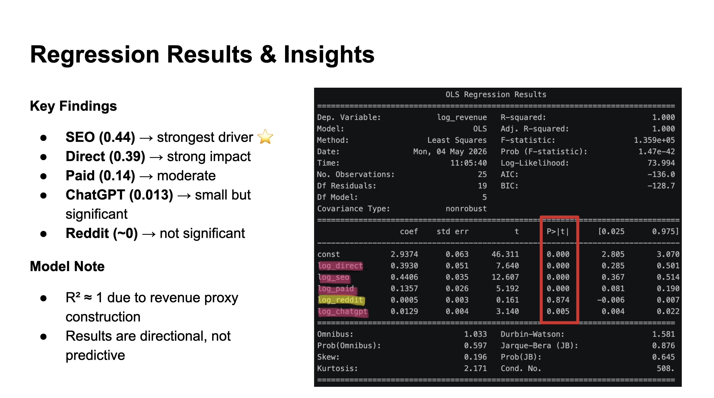

1. Growth Marketing Analytics Consulting — JumpFly
Client-Facing Consulting Project
Marketing Analytics
Growth Analytics
Business Intelligence


Situation
A digital marketing agency needed greater visibility into the effectiveness of its acquisition channels and clearer guidance on where to prioritize marketing investments. Stakeholders lacked a data-driven framework to evaluate channel performance across SEO, Direct, Paid Search, Reddit, and emerging AI-driven traffic sources.
Task
Develop an analytical framework to identify the channels driving business growth, measure relative marketing effectiveness, and provide actionable recommendations to support strategic resource allocation.
Action
- Analyzed 70+ high-intent SEO and customer acquisition opportunities using Python and SQL.
- Built log-log regression models to quantify the relationship between acquisition channels and revenue performance.
- Developed channel attribution and ROI evaluation frameworks across SEO, Direct, Paid Search, Reddit, and ChatGPT traffic sources.
- Designed executive dashboards to monitor acquisition performance and visualize key business metrics.
- Presented analytical findings and strategic recommendations during biweekly stakeholder consulting sessions.
Business Impact
- 📈 Identified SEO and Direct traffic as the strongest drivers of revenue growth, helping prioritize future marketing investments.
- 🎯 Quantified performance differences across acquisition channels, enabling more informed budget allocation decisions.
- 📊 Improved stakeholder visibility into channel effectiveness through executive-level dashboards and performance reporting.
- 🤖 Demonstrated that emerging AI-driven traffic sources showed measurable business impact despite lower traffic volume, highlighting future growth opportunities.
Key Metrics
70+ acquisition opportunities analyzed
5 acquisition channels evaluated
Biweekly client-facing presentations
Regression modeling & dashboard development
Technologies
Why This Project Matters: This project demonstrates how analytics can move beyond reporting and support business decision-making. By combining statistical modeling, channel attribution, and stakeholder communication, the project transformed raw marketing data into actionable growth strategies.